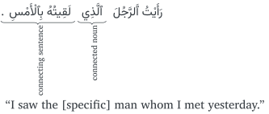

Not ready for study.
36 The connected nouns
THIS BOOK IS A WORK IN PROGRESS. IT IS INCOMPLETE AND MAY HAVE TYPOGRAPHICAL AND OTHER ERRORS. IT IS NOT YET READY FOR STUDY.
36.1 Introduction
Consider the sentence:
رَأَيْتُ ٱلرَّجُلَ.
“I saw the man.”
If the listener (or reader) can identify the individual referred to by the noun “the man” (maybe from a pre-existing mutual understanding with the speaker), then there is no problem with this sentence. But often, further clarification is needed for the listener to correctly identify the individual to whom the speaker is referring. This further clarification can be provided in a number of ways.
One way is to use an adjectival noun to describe the noun. For example:
رَأَيْتُ ٱلرَّجُلَ ٱلطَّوِيلَ.
“I saw the tall man.”
Another way is to use a pointing noun, thus:
رَأَيْتُ ذَ ٰلِكَ ٱلرَّجُلَ.
“I saw that man.”
But sometimes, a whole sentence is needed to provide the needed identification. In this case, Arabic uses what is called a connected noun and a connecting sentence. This example should help you understand what we mean:
In the above sentence, the connected noun is ٱَلَّذِي ʾallad͡hī. It is applied to singular masculine nouns, like ٱلرَّجُل. By itself it may be translated as “the one1m that/which/who/whom”. It is called a connected noun because it is directly followed by, i.e. connected to, a connecting sentence. The connecting sentence contains necessary information for the listener to correctly identify the individual that the connected noun refers to. The connecting sentence in the above example is the sentence لَقِيتُهُ بِٱلْأَمْسِ “I met him yesterday.”
Note by the way, that we did not translate the pronoun “him” in our original translation (above). This is because it would sound unnatural in English to say: “I saw the [specific] man (whom) I met him yesterday.” But this pronoun is an essential part of the Arabic connecting sentence and is called the refer-back pronoun. We will deal with it in section @ref(refer-back-pronoun) later in this chapter.
There are two types of connected nouns:
- The specific connected nouns
- The general connected nouns
We will study both these types separately within this chapter.
36.2 The specific connected nouns
The specific connected nouns have a significance which is restricted to a specific individual or category of individuals, and its connecting sentence should contain sufficient information to identify that specific individual.
The specific connected nouns is a group of nouns where each noun is applied to a gender and number of individuals. They are:
| connected noun | Description |
|---|---|
| ٱَلَّذِي ʾallad͡hī | Singular masculine. For both intelligent and non-intelligent beings. Rigid. Only one ل in its spelling. |
| ٱَلَّتِي ʾallatī | Singular feminine. For both intelligent and non-intelligent beings. Also used for plural non-intelligent beings of both genders. Rigid. Only one ل in its spelling. |
| ٱَللَّذَانِ ʾallad͡hānī | Dual masculine. For both intelligent and non-intelligent beings. Flexible: ٱَللَّذَيْنِ ʾallad͡hayni in the a-state and i-state. Two ل’s in its spelling. |
| ٱَللَّتَانِ ʾallatānī | Dual feminine. For both intelligent and non-intelligent beings. Flexible: ٱَللَّتَيْنِ ʾallatayni in the a-state and i-state. Two ل’s in its spelling. |
| ٱَلَّذِينَ ʾallad͡hīna | Plural masculine. For both intelligent beings. Rigid. Only one ل in its spelling. |
| ٱَللَّاتِي ʾallātī | For plural feminine intelligent beings. Also used for non-intelligent beings of both genders but ٱَلَّتِي is more common there. Rigid. Two ل’s in its spelling. Has the following variants: ٱَللَّاتِ ʾallāti, ٱَللَّائِي ʾallāʾī, ٱَللَّوَاتِي ʾallawātī |
36.2.1 Grammatical position of the specific connected noun
Consider again the same example:
رَأَيْتُ ٱلرَّجُلَ ٱلَّذِي لَقِيتُهُ بِٱلْأَمْسِ.
“I saw the [specific] man whom I met yesterday.”
In this example, the connected noun ٱَلَّذِي ʾallad͡hī is a attribute (in the a-state) to the described noun ٱلرَّجُلَ. Because ٱَلَّذِي is a rigid noun, it will appear the same in all states without any change to its ending.
As a attribute, the connected noun may also come as the last in a series of attributes, and can also be combined with a pointing noun. For example:
رَأَيْتُ ذَ ٰلِكَ ٱلرَّجُلَ ٱلطَّوِيلَ ٱلَّذِي لَقِيتُهُ بِٱلْأَمْسِ.
“I saw that [specific] tall man whom I met yesterday.”
But connected nouns need not only occur as attributes. They may occur in various grammatical positions. Here are some examples:
As a subject:
وَالَّذِينَ يَكْنِزُونَ ٱلذَّهَبَ وَٱلْفِضَّةَ وَلَا يُنْفِقُونَهَا فِي سَبِيلِ ٱللَّـٰهِ فَبَشِّرْهُمْ بِعَذَابٍ أَلِيمٍ
“And those who hoard gold and silver and spend it not in the way of Allāh - give them tidings of a painful punishment.”
As an info:
خِيَارُ أَئِمَّتِكُمُ الَّذِينَ تُحِبُّونَهُمْ وَيُحِبُّونَكُمْ
“The best of your rulers are the ones whom you love and who love you”
هُنَّ اللَّوَاتِي عَلَى الْمِنْبَرِ
“They are the ones which (are) on the pulpit.”
As a doer:
قَدْ بَلَغَنَا ٱلَّذِي قُلْتُمُوهُ.
“The [specific] one (thing) that you said has reached us.”
As a direct doee:
رَبَّنَا أَرِنَا ٱللَّذَيْنِ أَضَلَّانَا مِنَ ٱلْجِنِّ وَٱلْإِنْسِ
“Our Lord, show us those who misled us of the jinn and men”
Following a preposition:
أَوْ كَٱلَّذِي مَرَّ عَلَىٰ قَرْيَةٍ
“Or [consider such an example] as the one who passed by a township”
As a base noun in an annexation:
قَدْ سَمِعَ ٱللَّـٰهُ قَوْلَ ٱلَّتِي تُجَادِلُكَ فِي زَوْجِهَا
“Certainly has Allāh heard the speech of the one who argues [i.e., pleads] with you, [O Muḥammad]”
36.3 The refer-back pronoun
The connecting sentence is directly follows the connected noun. As we mentioned in the introduction, the connecting sentence provides clarifying information for the listener (or reader) to identify the individual referred to by the connected noun.
In the connecting sentence is a pronoun that refers back to the connected noun. This pronoun is called the refer-back pronoun. and it is an essential (though not always apparent) part of the connecting sentence.
Let us identify some of the refer-back pronouns in the examples we have given.
وَالَّذِينَ يَكْنِزُونَ ٱلذَّهَبَ وَٱلْفِضَّةَ
“And those who hoard gold and silver”
refer-back pronoun: the plural masculine doer pronoun و in يَكْنِزُونَ
خِيَارُ أَئِمَّتِكُمُ الَّذِينَ تُحِبُّونَهُمْ
“The best of your rulers are the ones whom you love and who love you”
refer-back pronoun: the plural masculine direct doee attached pronoun هُمْ in تُحِبُّونَهُمْ
قَدْ بَلَغَنَا ٱلَّذِي قُلْتُمُوهُ.
“The [specific] one (thing) that you said has reached us.”
refer-back pronoun: the singular masculine direct doee attached pronoun هُ in قُلْتُمُوهُ
رَبَّنَا أَرِنَا ٱللَّذَيْنِ أَضَلَّانَا مِنَ ٱلْجِنِّ وَٱلْإِنْسِ
“Our Lord, show us those who misled us of the jinn and men”
refer-back pronoun: the dual masculine doer pronoun ا in أَضَلَّانَا
أَوْ كَٱلَّذِي مَرَّ عَلَىٰ قَرْيَةٍ
“Or [consider such an example] as the one who passed by a township”
refer-back pronoun: the implied singular masculine doer pronoun “he” in مَرَّ
قَدْ سَمِعَ ٱللَّـٰهُ قَوْلَ ٱلَّتِي تُجَادِلُكَ فِي زَوْجِهَا
“Certainly has Allāh heard the speech of the one who argues [i.e., pleads] with you, [O Muḥammad]”
refer-back pronoun: the implied singular feminine doer pronoun “she” in تُجَادِلُكَ
36.3.1 Matching the refer-back pronoun with the connected noun
The refer-back pronoun matches the specific connected noun in gender and number. And the refer-back pronoun is generally an absent-person pronoun (هُ, هَا, هُوَ, هُمْ, etc.). In the example وَالَّذِينَ يَكْنِزُونَ ٱلذَّهَبَ وَٱلْفِضَّةَ “And those who hoard gold and silver,” the refer-back pronoun is the plural masculine absent-person doer pronoun و “they” in يَكْنِزُونَ “they hoard”. And it matches the plural masculine connected noun ٱلَّذِينَ.
However, there is an exception to the refer-back pronoun being an absent-person pronoun. And that is when the connected noun refers to the speaker or the addressed person, like أَنَا ٱلَّذِي, or أَنْتُمُ ٱلَّذِينَ, etc. In these cases, the refer-back pronoun may optionally:
- either be an absent-person pronoun to match the connected noun (as usual),
- or match the pronoun for the speaker or addressed person (as the case may be)
The latter is generally more common but both options are permissible. For example:
أَنَا ٱلَّذِي حَضَرْتُ.
refer-back pronoun: the singular masculine doer pronoun for the speaker تُ in حَضَرْتُ
or
أَنَا ٱلَّذِي حَضَرَ.
refer-back pronoun: the implied singular masculine doer pronoun for the absent person “he” in حَضَرَ
“I am the one (who) was present.”
Here are some examples from Classical Arabic:
أَنَا ٱلَّذِي سَمَّتْنِ أُمِّي حَيْدَرَهْ
“I am the one whom my mother named Ḥaydarah”
(The refer-back pronoun is the speaker person’s direct doee pronoun in سَمَّتْنِ, which is an abbreviation of سَمَّتْنِي “she named me”.)
فَقَالَ مُوسَى يَا آدَمُ أَنْتَ الَّذِي خَلَقَكَ اللَّهُ بِيَدِهِ
“Mūsā said: O Ādam, you are the one whom Allāh created with His Hand”
(The refer-back pronoun is the addressed person’s direct doee pronoun كَ in خَلَقَكَ.)
There is one circumstance where matching the refer-back pronoun to the (absent person) connected noun is mandated. And that is when the connected noun is the called-out person using the particle أَيُّهَا or أَيَّتُهَا. For example,
يَاأَيُّهَا ٱلَّذِينَ آمَنُوا
“O you who have believed”
not
\(\times\) يَاأَيُّهَا ٱلَّذِينَ آمَنْتُمْ
Similarly,
يَاأَيُّهَا الَّذِي نُزِّلَ عَلَيْهِ الذِّكْرُ
“O you upon whom the message has been sent down”
36.4 The general connected nouns مَنْ and مَا
The general connected nouns are unrestricted in significance, and may be applied to any individual who fits the criteria given in the connecting sentence. The most commonly general connected nouns are:
- مَنْ man. Typically used for intelligent beings and translated as “who”.
- مَا mā. Typically used for non-intelligent beings and translated as “what”.
- أَيّ ʾayy. Used for both intelligent and non-intelligent beings. Translated as “which”, “whichever” or “any”.
There are also a couple of rarely or dialectally used general connected nouns that we will not cover. These are ذُو d͡hū, and ذَا d͡hā.
In this section we will deal with مَنْ and مَا. We will deal with أَيّ separately in section (give ref) later in this chapter.
Unlike the specific connected nouns (ٱَلَّذِي, etc.), the general connected nouns do not vary for number and gender.
For example:
أُحِبُّّ مَنْ يَعْدِلُ [Wright 2/322A]
“I love [him] who is just.”
وَمِنْهُم مَّن يَسْتَمِعُونَ إِلَيْكَ
[سورة يونس 10:42] “And among them are those who listen to you.”
ٱِصْنَعْ مَا بَدَا لَكَ.
“Do what seems (good) to you.”
مَرَرْتُ بِمَا يُعْجِبُكَ.
“I passed by what will please you.”
عرفت ما اشتريته، وما اشتريتهما، وما اشتريتها، وما اشتريتهن [https://shamela.ws/book/13257/195]
36.4.1 مَنْ and مَا after prepositions
When مَنْ and مَا are directly preceded by the prepositions مِنْ and عَنْ, these prepositions lose their ن and are joined to the following noun with the noun’s م doubled. For example: مَمَّنْ mimman, مَمَّا mimmā, عَمَّنْ ɛamman, عَمَّا ɛammā.
The preposition فِي is also often (though not always) optionally attached to these connected nouns, thus: فِيمَنْ fīman, فِيمَا fīmā.
The remaining prepositions follow the normal rules: عَلَى مَا, كَمَنْ, etc. But we will see, if Allāh wills, in chapter @ref(questions), that مَا and مَنْ are also used as question nouns, in which case the rules of joining prepositions to them will differ.
36.4.2 The refer-back pronoun for the general connected nouns
The general connected nouns مَنْ and مَا are themselves singular masculine in number and gender. However, they can be used to signify persons or things of any number and gender.
Their refer-back pronouns can then, optionally:
Either match the gender and number of the persons or things meant by the connected noun. For example, for مَنْ:
وَمِنْهُمْ مَنْ يَسْتَمِعُونَ إِلَيْكَ [سورة يونس 10:42]
“And among them are those who listen to you”قَدْ خَابَتْ مَنْ فَعَلَتْ ذَلِكَ مِنْهُنَّ وَخَسِرَتْ [جامع الترمذي :3318]
“She has thwarted herself, whoever did that from them3f, and lost.”Note also how, in this example how, in addition to the feminine refer-back doer pronouns in فَعَلَتْ and خَسِرَتْ, the feminine gender of the person signified by مَنْ has also caused the تْ of femininity to be added to the verb خَابَ (of which مَنْ is the doer noun).
Examples for مَا:
عرفت ما اشتريته، وما اشتريتهما، وما اشتريتها، وما اشتريتهن [https://shamela.ws/book/13257/195]
Or be singular masculine to match the connected noun itself. This is generally more common for مَا. For example:
وَمِنْهُم مَّن يُؤْمِنُ بِهِۦ وَمِنْهُم مَّن لَّا يُؤْمِنُ بِهِ [سورة يونس 10:40]
“And of them are those who believe in it, and of them are those who do not believe in it.”جَمَعْتُ مِنَ ٱلْوَرَقِ مَا سَقَطَ. “I gathered what fell from the leaves.”
صَلِّ مِنَ ٱلرَّكَعَاتِ مَا يَتَيَسَّرُ.
“Pray from the units (of prayer) what is easy.”لَمْ أَجِدْ مَا أَعْتَذِرُ بِهِ [مساوئ الأخلاق للخرائطي:171]
“I did not find what I (could) make an excuse for with”.
Both options can be utilized together as well. For example:
بَلَىٰ مَنْ أَسْلَمَ وَجْهَهُۥ لِلَّهِ وَهُوَ مُحْسِنٌۭ فَلَهُۥٓ أَجْرُهُۥ عِندَ رَبِّهِۦ وَلَا خَوْفٌ عَلَيْهِمْ وَلَا هُمْ يَحْزَنُونَ
“Yes, [on the contrary], whoever submits his face [i.e., self] in Islām to Allāh while being a doer of good will have his reward with his Lord. And no fear will there be concerning them, nor will they grieve.”
فَمَن تَبِعَ هُدَايَ فَلَا خَوْفٌ عَلَيْهِمْ وَلَا هُمْ يَحْزَنُونَ
“whoever follows My guidance - there will be no fear concerning them, nor will they grieve.”
36.4.3 Applicability of مَا and مَنْ to intelligent and non-intelligent beings
As we mentioned earlier, مَنْ is typically used to refer to intelligent beings. And مَا is typically used to refer to non-intelligent beings. However, there are some circumstances in which these roles can differ.
مَنْ may be used for non-intelligent beings when a non-intelligent being is compared with an intelligent being. For example,
وَاللَّهُ خَلَقَ كُلَّ دَابَّةٍ مِّن مَّاءٍ ۖ فَمِنْهُم مَّن يَمْشِي عَلَىٰ بَطْنِهِ وَمِنْهُم مَّن يَمْشِي عَلَىٰ رِجْلَيْنِ وَمِنْهُم مَّن يَمْشِي عَلَىٰ أَرْبَعٍ ۚ
“Allāh has created every [living] creature from water. And of them are those that move on their bellies, and of them are those that walk on two legs, and of them are those that walk on four.”
مَنْ may also be used for non-intelligent beings when attributes usually applicable to intelligent beings are applied to a non-intelligent being. For example:
أَسِرْبَ الْقَطَا، هَلْ مَنْ يُعِيرُ جَنَاحَه * لَعَلِّي إِلَىٰ مَنْ قَدْ هَوِيتُ أَطِيرُ
O flock of birds, is there who will lend his wing
that perhaps I may fly to whom I love
أَ: “O”, سِرْب: “flock”, قَطَا: a species of bird, هَلْ: “is there?”, يُعِيرُ: “lend”, جَنَاح: “wing”, لَعَلِّي: “Perhaps I”, هَوِيتُ: “I love”, أَطِيرُ: “I fly”.
مَنْ may also be used for non-intelligent beings when there is a mixed group including both intelligent and non-intelligent beings, and the intelligent beings are given preference. For example:
وَلِلَّهِ يَسْجُدُ مَن فِى ٱلسَّمَـٰوَٰتِ وَٱلْأَرْضِ
“And to Allāh prostrates whoever is within the heavens and the earth”
Similarly, مَا may, in some circumstances, be used for intelligent beings. This may be when there is a mixed group including both intelligent and non-intelligent beings, and the non-intelligent beings are given preference because of their larger number. For example:
يُسَبِّحُ لِلَّهِ مَا فِي السَّمَاوَاتِ وَمَا فِي الْأَرْضِ
“Whatever is in the heavens and whatever is on the earth is exalting Allāh”
مَا may also be used for intelligent beings when the person being referred to is vague to the speaker. For example:
رَبِّ إِنِّي نَذَرْتُ لَكَ مَا فِي بَطْنِي مُحَرَّرًا
“My Lord, indeed I have pledged to You what is in my womb, consecrated [for Your service]”
مَا may also be used for intelligent beings when the characteristics of an intelligent being are highlighted when referring to them. For example:
فَانكِحُوا مَا طَابَ لَكُم مِّنَ النِّسَاءِ
“then marry those that please you of [other] women”
36.4.4 Grammatical position of the general connected nouns
The general connected noun may occur in various grammatical positions. Here are some examples:
As a subject:
ما عِنْدَكُمْ يَنْفَدُ
“Whatever you have will end”
As an info:
مَالُكَ مَا قَدَّمْتَ، وَمَالُ وَارِثِكَ مَا أَخَّرْتَ
“Your wealth is what you have sent forward, and the wealth of your inheritors is what you have left behind.”
As a doer:
فَعَلَهُ مَنْ هُوَ خَيْرٌ مِنِّي
“it was done by one who was better than I”
As a direct doee:
اعْمَلُوا مَا شِئْتُمْ
“Do whatever you will”
Following a preposition:
وَأَغْنِنِي بِفَضْلِكَ عَمَّنْ سِوَاكَ
“and make me independent from (all) who are besides You”
As a base noun in an annexation:
فَذَلِكَ مَثَلُ مَنْ أَطَاعَنِي
“So that is the similitude of the one who obeyed me”
مَا تَرَىٰ رَأْيَ مَا نَرَىٰ.
“You do not think what we think.”
(literally: “You do not opine the opinion of what we opine.”)
أَمْرَ مَا تَحْذَرُ
“the matter of which you are wary”
Unlike the specific connected nouns (ٱَلَّذِي, etc), the general connected nouns do not occur as attributes. So while we can say:
مَرَرْتُ بِٱلرَّجُلِ ٱلَّذِي أَحْسَنَ إِلَيّ.
“I passed by the man who was good to me.”
we cannot say:
\(\times\) مَرَرْتُ بِٱلرَّجُلِ مَنْ أَحْسَنَ إِلَيّ.
We will have to say instead:
مَرَرْتُ بِمَنْ أَحْسَنَ إِلَيّ.
The general connected noun can, however, occur as a replacement. For example,
والمسلمون مَن تبع رسول الله صلى الله عليه وسلم كثير
“And the Muslims, who follow the Messenger of Allāh, are many”
36.4.5 Use with the preposition مِنْ
The preposition مِنْ is frequently used with the general connected nouns to restrict the applicability of the connected noun to a group or type. This مِنْ may come either before the connected noun, or after its connecting sentence. For example:
فَأَعْطَانِي مَا كَانَ عِنْدَهُ مِنْ خُبْزٍ.
“Then he gave me what he had of bread.”
مَنْ دَخَلَ ٱلشَّأْمَ مِنَ ٱلْعَرَبِ
“Those Arabs who entered Syria”
(literally: “Who entered Syria from the Arabs”)
فَانكِحُوا مَا طَابَ لَكُم مِّنَ النِّسَاءِ
“then marry those that please you of [other] women”
اللَّهُمَّ اقْسِمْ لَنَا مِنْ خَشْيَتِكَ مَا يَحُولُ بَيْنَنَا وَبَيْنَ مَعَاصِيكَ
O Allāh, apportion for us, from the fear of You, (that) what shall come between us and disobedience of You
(The connected noun مَا is the direct doee of the verb of command اقْسِمْ.)
36.4.6 Use with a repeated word to express vagueness or uncertainty
The general connected nouns مَنْ and مَا are used with a word that is repeated to express a vague or uncertain quantity or quality. For example:
هُمْ مَا هُمْ
“They are what they are.”
نَزَلَ مَنْ نَزَلَ مِنْهُمْ
“Some of them came down.”
(literally: Came down who came down from them.”)
جَمَعْتُ مَا جَمَعْتُ
“I gathered what I gathered.”
36.5 Deleting the refer-back pronoun
The refer-back pronoun may be deleted (and its meaning is then implicit) if some conditions are satisfied. Some conditions are specific to the state of the refer-back pronoun. These are:
When the refer-back pronoun is the subject of a nounal sentence, then it may be deleted, and its meaning will be implied. When deleting the refer-back pronoun in this case, it is preferred that the connecting sentence not be too short.
For example:
انْظُرُوا إِلَى مَنْ أَسْفَلَ مِنْكُمْ [صحيح مسلم :2963c] 1
“Look at who is lower than you.”
(instead of انْظُرُوا إِلَى مَنْ هُوَ أَسْفَلَ مِنْكُمْ.)وَلَهُ مَن فِي السَّمَاوَاتِ وَالْأَرْضِ [سورة الأنبياء 21:19]
“To Him belongs whoever is in the heavens and the earth.”
(instead of مَنْ هُوَ فِي ٱلسَّمَوَاتِ وَٱلْأَرْضِ)مَا أَنَا بِٱلَّذِي قَائِلٌ لَكَ شَيْـًٔا [Wright 2/322D]
I am not the one who says anything to you.
(instead of مَا أَنَا بِٱلَّذِي هُوَ قَائِلٌ لَكَ شَيْـًٔا)If the connecting sentence is very short, the deleting the refer-back pronoun subject is permissible, though rare. For example:
لَا يَنْطِقُ بِمَا سَفَهٌ [Wright 2/322D]
“He does not speak what is foolish.”
(instead of بِمَا هُوَ سَفَهٌ)When the refer-back pronoun is an attached pronoun for the direct doee it is permissible to delete it. For example:
هَـٰذَا مَا كَنَزْتُمْ لِأَنْفُسِكُمْ [سورة التوبة 9:35]
“This is what you hoarded for yourselves”
(instead of مَا كَنَزْتُمُوهُ)When the refer-back pronoun is in the i-state, it is permissible to delete it:
When the refer-back pronoun is the base noun in an annexation whose annexe noun is a doer participle or the direct doee implying a present or future meaning. For example:
فَاقْضِ مَا أَنتَ قَاضٍ [سورة طه 20:72]
“So decree whatever you are to decree.”
(instead of فَاقْضِ مَا أَنتَ قَاضِيهِ)قَالَ أَتَبْعَثُ إِلَيَّ مَا لَسْتَ آكِلًا [https://hadithweb.com/ahmad:21023]
“He said: Do you send to me what you do not eat?”
(instead of مَا لَسْتَ آكِلَهُ)
When the refer-back pronoun is attached to a preposition or adverb, and the same preposition or adverb has already been used (with the same meaning) with the connecting noun or its described noun. The preposition/adverb is deleted along with its attached pronoun. For example:
أَنَا عِنْدَ مَنْ أَنْتَ. [Wright 2/323C]
“I am at his [house] at whose you (are).”
(instead of مَنْ أَنْتَ عِنْدَهُ)مَرَرْتُ بِٱلَّذِي مَرَّ سُلَيْمَانُ. [Wright 2/323D]
“I passed by the (same) one that Sulaymān did.”
(instead of مَرَرْتُ بِٱلَّذِي مَرَّ بِهِ سُلَيْمَانُ.)
In addition to the above conditions that are specific to the state of the refer-back pronoun, a further, general, condition should be satisfied, which is: that the omission of the refer-back pronoun be obvious to the listener, and the listener can re-construct the original meaning by restoring the refer-back pronoun to get the intended meaning.
If the refer-back pronoun is deleted, and the remaining connecting sentence (with the refer-back pronoun deleted) is valid as a connecting sentence on its own right, then it will give a different meaning (even if slightly) from the original. And the listener will not know that the refer-back pronoun has been deleted. In this case, it is not permitted to delete the refer-back pronoun. Here is an example that should explain what we mean:
Consider the sentence:
جاء الذي ضربته في داره.
“The one whom I beat (him) in his house, came.
The connecting sentence is ضربته في داره. “I beat him in his house.” and the refer-back pronoun is the a-state direct doee pronoun ه “him”. If we delete this pronoun, the sentence becomes
جاء الذي ضربت في داره.
“The one who I beat in his house, came.
Now the meaning of the sentence is markedly different. The connecting sentence ضربت فِي دَارِهِ is valid on its own right but it gives a different meaning from the original. It does not specify that I beat him in his house, just that I beat in his house, possibly others. Because the omission of the refer-back pronoun is not obvious, the sentence now does not siginify the original intent. And so deleting the refer-back pronoun in this case is not permitted.
36.6 The general connected noun أَيّ
أَيّ ʾayy “which/whichever” is a general connected noun similar to مَا “what” and مَنْ “who”. But it differs from مَا and مَنْ in a few aspects:
Firstly, أيّ is (generally) fully flexible. So it will display its state as a vowel mark on its final letter. Whereas مَا and مَنْ, as we know, are rigid.
Secondly, أيّ can be, and, in fact, properly is, the annexe noun in an annexation. Whereas مَا and مَنْ cannot be annexe nouns. For example,
يُعْجِبُنِي أَيُّ ٱلتَّلَامِذَةِ يَجْتَهِدُ.
“Whichever of the students strives, pleases me.”
(أيّ is in the u-state)
فَأْوِ إِلَى أَيِّهِمْ يَحْمِيكَ.
“So take shelter with whichever of them protects you.”
(أيّ is in the i-state)
Also, أيّ is used indiscriminately for both intelligent and non-intelligent beings. For example,
أَحْمِلُ أَيَّ ٱلْحَقِيبَتَيْنِ هِيَ ٱلْأَثْقَلُ
“I shall carry whichever of the two bags is the heavier.”
(أيّ is in the a-state)
Note how, in the above examples, the final vowel mark on أيّ varies, depending on its state due to its being a flexible noun.
أَيّ, like مَا and مَنْ, is itself a singular masculine noun. And, like مَا and مَنْ, أَيّ can be used, unchanged, for both genders. The previous example used أَيّ with حَقِيبَة which is a feminine noun. But a feminine version أَيَّة does exist and can be used with feminine base nouns. It is, however, only commonly used if its base noun is a feminine pronoun. For example,
صَادِقِي أَيَّتَهُنَّ تَنْصَحُكِ.
“Befriend whichever of them3,f is sincere to you1,f.”
By the way, أَيّ ʾayy (like مَا and مَنْ) is also a question noun and we will discuss its properties in more detail in section …
36.6.1 The connected noun أَيّ without a base noun
أيّ can sometimes occur without a base noun. Technically, it will then be indefinite, and thus tanwīned. However, it will carry the meaning of an implied annexation. For example,
سَأُقَاتِلُ أَيًّا يُقَاوِمُنِي.
“I will fight whichever [of them, the enemies, etc.] resists me.”
36.6.2 The connected noun أَيّ with a deleted refer-back pronoun
Consistent with what we have already learned for the other connected nouns, the refer-back pronoun may be deleted in connected sentences for the connected noun أيّ.
For example,
أَجْزِي أَيَّهُمْ صَادِقٌ.
“I will reward whichever of them is truthful.”
(instead of أَيَّهُمْ هُوَ صَادِقٌ.)
36.6.3 Circumstance for the rigidity of أَيّ
As mentioned, أَيّ is generally fully flexible. However, there is one circumstance in which it may optionally be a rigid noun with the final vowel mark ◌ُ thus: أَيُّ. This is when both of the following conditions are satisfied:
- أَيّ is an annexe noun.
- The refer-back pronoun to أَيّ is the subject of the connecting sentence and it is deleted.
For example,
أَجْزِي أَيُّهُمْ صَادِقٌ.
“I will reward whichever of them is truthful.”
Since this rigidity is optional, أَيّ may, in this case, retain its full-flexibility:
أَجْزِي أَيَّهُمْ صَادِقٌ.
“I will reward whichever of them is truthful.”
But if both the conditions above are not satisfied then أَيّ shall remain fully-flexible. For example,
أَجْزِي أَيَّهُمْ هُوَ صَادِقٌ.
أَجْزِي أَيًّا هُوَ صَادِقٌ.
أَجْزِي أَيًّا صَادِقٌ. 2
36.7 Separating the connecting sentence from the connected noun
Generally, the connecting sentence directly follows the connected noun, as in all the examples we have given so far. However, the connecting sentence may be separated from the connected noun by one of the following:
An oath. For example:
جَاءَ ٱلَّذِي وَٱللَّـٰه قَهَرَ ٱلْأَعْدَاءَ.
“The one who - by Allāh - overpowered the enemies has come.”A sentence calling out to someone. For example,
أَنْتَ ٱلَّذِي يَا زَيْدُ فَتَحْتَ ٱلْبَابَ.
“You are the one - O Zayd - who opened the door.”A parenthetical clause, which is a sentence within the main sentence that adds information to it, but which can be deleted without affecting the completeness of the main sentence. For example:
قَدِمَ ٱلَّذِي أَطَالَ ٱللَّـٰهُ عُمْرَهُ أَحْسَنَ إِلَيَّ.
“The one who - may Allah lengthen his age - was good to me has arrived.”قَدِمَ ٱلَّذِي وَهُوَ مُبْتَسِمٌ أَحْسَنَ إِلَيَّ.
“The one who - and he is smiling - was good to me has arrived.”
36.8 Deleting the connected noun and/or the connecting sentence
TODO. See النحو الوافي
- أَنَا أَوَّلُ الْعَرَبِ سَأَلَهُ [سنن النسائي :5687]
I [was] the first of the Arabs [who] asked him
36.9 Sentences without connected nouns
There are some sentences where we might expect a connected noun but which are always, or often (as the case may be), expressed in Arabic without a connected noun. These sentences are of different types:
36.9.1 Sentences with indefinite nouns needing a qualifying sentence
When an indefinite noun needs a qualifying sentence, it is natural in English to insert “that”, “which”, “who”, etc. between the noun and the following sentence. For example, “I passed by a man who was sleeping.”
In Arabic, however, we will not use any connected noun in such sentences. This is because the connected nouns are considered definite nouns. And therefore they may not be a attribute to an indefinite noun. So while we can say:
مَرَرْتُ بِٱلرَّجُلِ ٱلَّذِي يَنَامُ.
“I passed by the man who is sleeping.”
we cannot say
\(\times\) مَرَرْتُ بِرَجُلٍ ٱلَّذِي يَنَامُ.
Instead, we put the qualifying sentence directly after the indefinite noun. The qualifying sentence will then not be a connecting sentence, but will itself be the attribute to the described noun:
مَرَرْتُ بِرَجُلٍ يَنَامُ.
“I passed by a man (who) is sleeping.”
Here is another example:
جَلَسْتُ فِي مَجْلِسٍ قَدْ رُشَّ بِمَاءِ ٱلْوَرْدِ.
“I sat in a sitting (that) had been sprinkled with rose-water.”
A connected noun can, however, follow an indefinite noun, if we intend to start a separate sentence with it, or if it is a replacement (see chapter @ref(the-replacement)). For example.
وَابْعَثْهُ مَقَامًا مَحْمُودًا الَّذِي وَعَدْتَهُ
“Resurrect him to a praiseworthy station, the one that you promised him”
وَيْلٌ لِّكُلِّ هُمَزَةٍ لُّمَزَةٍ
الَّذِي جَمَعَ مَالًا وَعَدَّدَهُ
“Woe to every scorner and mocker
Who collects wealth and [continuously] counts it.”
36.9.2 Sentences containing a noun with generic definiteness
Sometimes the definite article ٱَلْ does not determine a particular individual, but makes a noun definite only in a generic way. In this case a qualifying sentence may directly follow it without any intermediate connected noun used as a attribute.3 Because there is no connected noun, the qualifying sentence is, again, not analyzed as a connecting sentence. For example:
كَمَثَلِ الْحِمَارِ يَحْمِلُ أَسْفَارًا
“like that of a donkey who carries volumes [of books]”
(Note how the translator has translated ٱلْحِمَار as “a donkey” because in English an indefinite noun is often used to indicate a generic type.)
أَنْتَ ٱلْوَزِيرُ لَا يُعْصَىٰ
“You are the (sort of) vizier (who) is not disobeyed.”
هُمُ ٱلْفَوَارِسُ يَحْمُونَ ٱلنِّسَاءَ.
“They are the (kind of) horsemen (who) protect the women.”
36.9.3 Sentences with prepositional or adverbial phrases
If a sentence has a definite noun which is to be qualified by a prepositional or adverbial phrase, then in many cases, that phrase may directly follow the definite noun without any intermediate connected noun used a attribute. But using a connected noun is also permissible if one wishes to emphasize that the specificity of the noun. When there is no connected noun, the prepositional or adverbial phrase is not analyzed as a connecting sentence, but is considered attached to an implied verb that has the idea of “being”, like “is”, “are”, etc. When there is a connected noun, then it is analyzed as a connecting sentence, as usual. For example:
سِرْتُ فِي ٱلْحَدِيقَةِ عِنْدَ ٱلْمَسْجِدِ.
“I walked in the garden next to the mosque.”
or
سِرْتُ فِي ٱلْحَدِيقَةِ ٱلَّتِي عِنْدَ ٱلْمَسْجِدِ.
or
سِرْتُ فِي ٱلْحَدِيقَةِ ٱلَّتِي هِيَ عِنْدَ ٱلْمَسْجِدِ.
“I walked in the [specific] garden that [is] next to the mosque.”
See also صحيح مسلم :2963c and سنن ابن ماجه :4142 for variants with the refer-back pronoun.↩︎
The examples generally quoted by the grammarians are (1) the verse of poetry إِذَا مَا لَقِيتَ بَنِي مَالِكٍ فَسَلِّمْ عَلَى أَيُّهُمْ أَفْضَلُ, and (2) the āyah ثُمَّ لَنَنْزِعَنَّ مِنْ كُلِّ شِيعَةٍ أَيُّهُمْ أَشَدُّ عَلَى الرَّحْمَنِ عِتِيّاً [سورة مريم 19:69]↩︎
Wright 2/318C↩︎